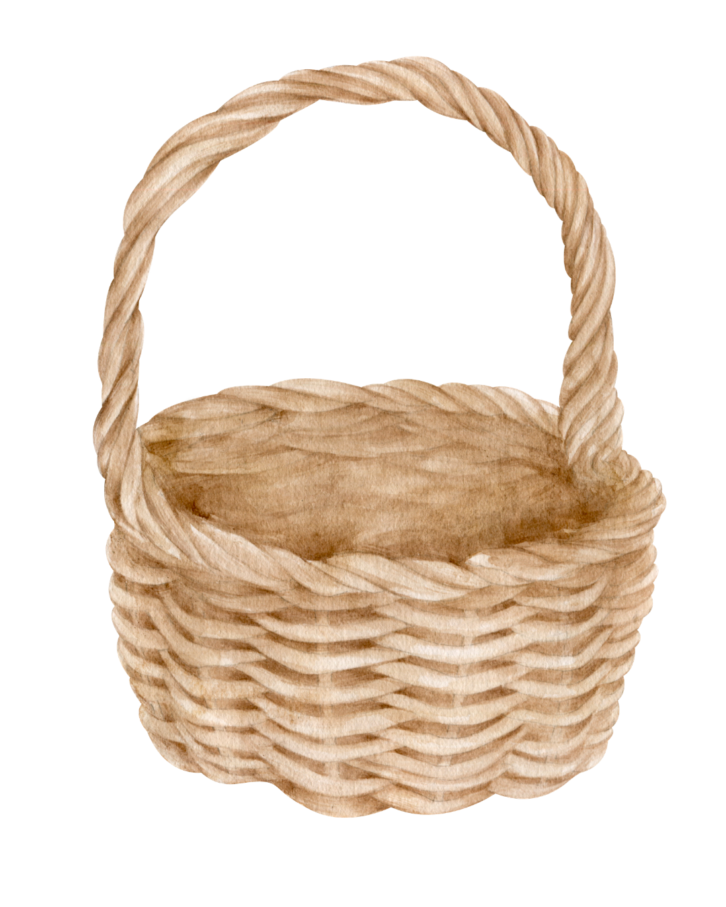
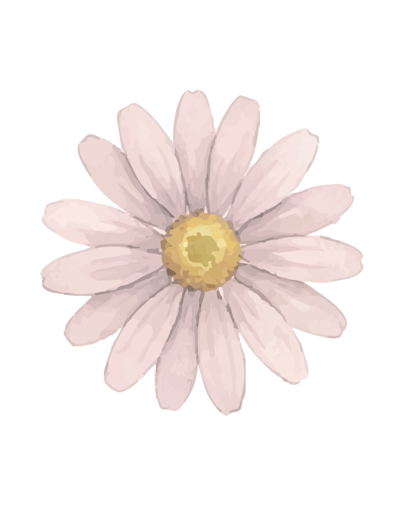

시
시는 예술의 한 종류다. 그러다보니 책을 만들거나 그림을 그리는 것처럼 시인들이 시로 생각과 마음을 표현 할 수 있다. 그래서 다양한 작가들이 특이한 고민이나 경험에대해 적으면서 시마다 특별한 의미가 생긴다. 어떤 사람들은 어떤 시를 공감할 수 있지만 또 다른 사람들은 그 같은 시를 공감 잘 못 하는데 그것이 사람마다 다르다는 예이다. 재능 많은 시인들은 평범한 소재를 아름답게 표현해서 읽는 사람들에게 세상을 다르게 보는데 도움을 주고 단순한것들에게 감사하는 마음이 더 생길 수 있다. 그래서 사람들은 많은 것을 배울 수 있고 생각을 더 깊게 하면서 성격도 개발 할 수 있다. 그래서 시인들과 그들의 작품들이 세상에서 더 인정 받았으면 좋겠다. 예술이 예술가의 감정을 담고있다. 시는 예외가 아니다. 시를 감상하면서 우리의 마음을 더 알게 되고 어떤 감정을 느끼고 있는지 보여준다. 그렇게 감정을 더 배울 수 있고 서로 더 이해할 수 있어서 시인들이 아주 대단한 일을 한다고 생각한다. 나는 시를 짓는게 좋다. 한국어를 더 연습 할 수 있는 방법인거 물론인데 시오 생각과 마음을 정리 할 수 있어서 시를 지을 때 마음이 너무 평화스럽다. 좋은 시가 아니어도 시를 지으면 나중에 볼수 있는 것이 생기고 필요할때 다시 읽고 스트레스도 풀릴 수 있다.